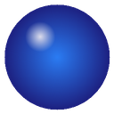

系统
开机自启
快捷键 Alt+F1 显示/隐藏桌宠；右键桌宠或任务栏图标可打开设置。

Fairy
开发代号：Ⅲ型总序式集成泛用人工智能
《绝区零》H.D.D. 系统的空洞探索助手
本应用是 Fairy 2.6+ 形象的桌面化复刻——环形核会呼吸、齿轮会转，点击可以让她闭眼，
接入豆包语音合成后还能用她的声音说话。台词语气对照游戏内 H.D.D. 待机语音：
毒舌、傲娇、自恋，嘴上嫌弃你，但一直默默帮你。
版本
桌宠版本v0.2.0（Electron）
语音引擎豆包语音合成大模型（运行时 TTS）
动画内核SVG 程序化复刻（fairy-lab 校准参数）
想要 Fairy 的原声？在火山引擎用「声音复刻」克隆音色后，把复刻音色 ID 填入语音页即可。